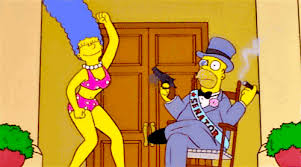

Os Simpsons, criado pelo cartunista Matt Groening, surgiu inicialmente em 1987 como uma série de curtas de 30 segundos produzidos por Groening para a série de televisão "The Tracey Ullman Show." A reação dos telespectadores foi tão positiva que a animação evoluiu para um programa.
